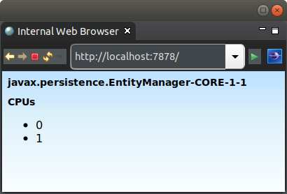

This tutorial looks at configuring an ExecutiveSource to provide thread affinity for a web application.
To demonstrate the thread affinity, the following simple application is used.
Thread affinity binds the thread to only run on a particular CPU core. The advantage of using thread affinity is that it can increase the CPU cache hits, as the thread will always be run on a particular core. Increasing CPU cache hits reduces bus contention and improves performance of processing.
However, thread affinity is not a silver bullet to improving performance. There can be circumstances of cache sizes increasing causing the cache hits to drop. However, in many cases it can provide an increased boost in performance to your applications.
Always performance test to ensure thread affinity is providing your application the increased CPU cache hits and subsequent increased performance.
Thread affinity is not straight forward to implement. However, OfficeFloor makes it simple via the WebThreadAffinityExecutiveSource (that uses OpenHFT).
Please ensure you follow the instructions on OpenHFT to install the necessary native libraries for thread affinity to work.
Then simply include the following on the class path:
<dependency> <groupId>net.officefloor.web</groupId> <artifactId>officeweb_executive</artifactId> </dependency>
This will set up thread affinity for:
- HTTP servicing threads
- all teams (each team is split to run across the CPU cores with their threads bound to a particular core)
The result of this is that the web request is serviced entirely on one CPU core. This allows for improved CPU cache hits even if you require multiple threads (teams) to service the request. All threads for servicing the request will be bound to the same CPU core. This subsequently, in many cases, boosts your application performance - as each CPU core can act like it's own server without having to have heavy weight synchronising between the cores slowing application performance.
The tutorial outputs the name of the thread at the top of the page. The thread name is comprised of:
As the invoking thread is bound to a CPU core on triggering the mock request, running the request multiple times should always have the same CPU core.
The following test demonstrates the same CPU core always servicing the request.
@RegisterExtension
public final MockWoofServerExtension server = new MockWoofServerExtension();
@Test
public void sameThreadPoolDueToAffinity() throws Exception {
// On multiple calls, should be same core (as locks affinity)
String previousCore = null;
for (int i = 0; i < 100; i++) {
// GET entry
MockHttpResponse response = this.server.send(MockHttpServer.mockRequest("/"));
String html = response.getEntity(null);
assertEquals(200, response.getStatus().getStatusCode(), "Should be successful: " + html);
// Parse out the core
Pattern pattern = Pattern.compile(".*CORE-(\\d+)-.*", Pattern.DOTALL);
Matcher matcher = pattern.matcher(html);
assertTrue(matcher.matches(), "Should be able to obtain thread affinity core");
String core = matcher.group(1);
// Ensure same as previous core (ignoring first call)
if (previousCore != null) {
assertEquals(previousCore, core, "Should be locked to same core");
}
// Set up for next call
previousCore = core;
}
}
For further details on how you can control threads within an application see the ExecutiveSource. It is beyond this tutorial to explain it's full capabilities, however it is geared to following how the executives would manage personal in an office.
The next tutorial covers Kotlin.